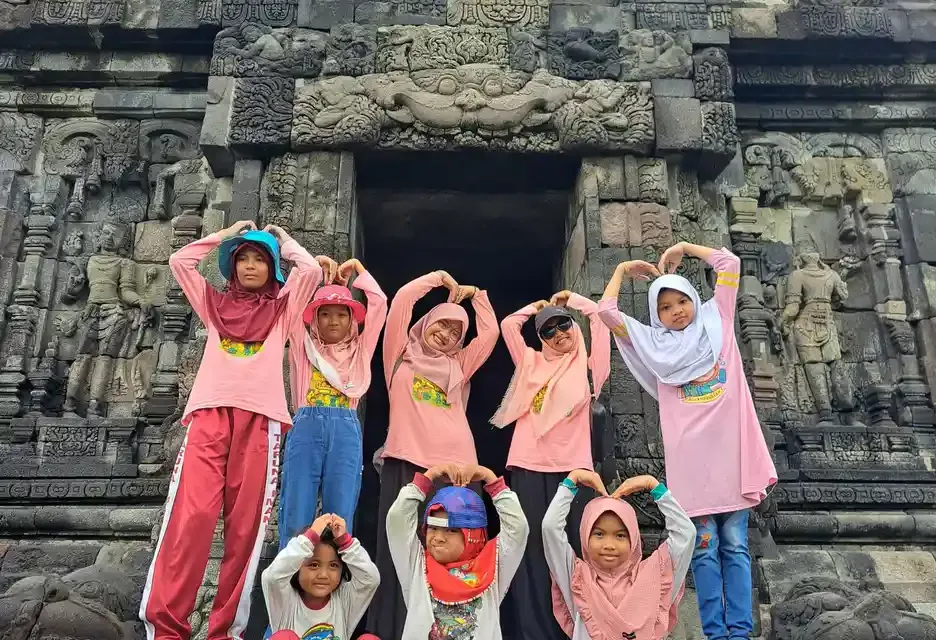
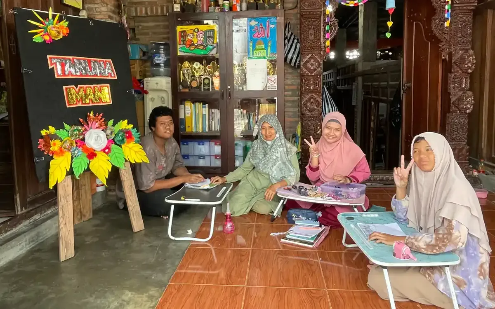
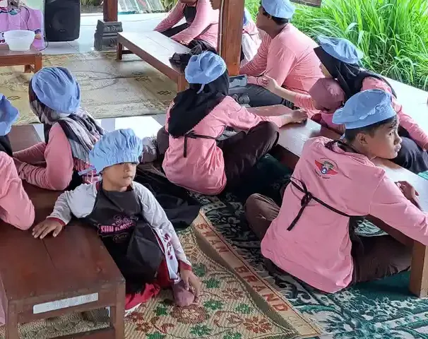

Singkatnya: hak anak berkebutuhan khusus di Indonesia diatur terutama dalam UU Nomor 8 Tahun 2016 tentang Penyandang Disabilitas. Selain 22 hak umum penyandang disabilitas di Pasal 5 ayat (1), seperti hak pendidikan, kesehatan, aksesibilitas, dan bebas dari stigma, Pasal 5 ayat (3) memberi anak penyandang disabilitas 7 hak khusus: pelindungan khusus dari diskriminasi dan kekerasan, pengasuhan keluarga, perlindungan kepentingan dalam pengambilan keputusan, perlakuan manusiawi, pemenuhan kebutuhan khusus, perlakuan yang sama dengan anak lain, dan pendampingan sosial. Di sekolah, hak itu diwujudkan lewat akomodasi yang layak yang dirinci dalam PP Nomor 13 Tahun 2020.
Catatan istilah
"Anak berkebutuhan khusus" (ABK) adalah istilah yang lazim di dunia pendidikan, sedangkan peraturan perundang-undangan memakai istilah "anak penyandang disabilitas". Artikel ini merangkum isi peraturan untuk orang tua dan guru, bukan nasihat hukum. Untuk kasus tertentu, rujuk teks resmi peraturan dan konsultasikan dengan dinas terkait atau pendamping hukum.
Daftar Isi
- Dasar hukum hak anak berkebutuhan khusus
- 22 hak umum penyandang disabilitas
- 7 hak khusus anak penyandang disabilitas
- Hak pendidikan dan kewajiban pemerintah
- Akomodasi yang layak menurut PP 13/2020
- Unit Layanan Disabilitas
- Langkah orang tua bila hak anak tidak dipenuhi
- Pertanyaan yang sering diajukan
Dasar Hukum Hak Anak Berkebutuhan Khusus
Hak anak berkebutuhan khusus tidak berdiri di satu peraturan saja. Ada beberapa lapis aturan yang saling melengkapi, dan orang tua sebaiknya mengenal setidaknya empat di antaranya:
| Peraturan | Isi pokok yang relevan untuk anak |
|---|---|
| UU Nomor 19 Tahun 2011 | Pengesahan Konvensi Mengenai Hak-hak Penyandang Disabilitas (CRPD) PBB, sehingga Indonesia terikat pada konvensi tersebut |
| UU Nomor 8 Tahun 2016 | Ragam disabilitas, daftar hak penyandang disabilitas, hak khusus anak, hak pendidikan, kewajiban pemerintah di bidang pendidikan, Unit Layanan Disabilitas |
| PP Nomor 13 Tahun 2020 | Akomodasi yang layak untuk peserta didik penyandang disabilitas: tujuan, bentuk per ragam disabilitas, fasilitasi, dan sanksi administratif |
| Permendikbudristek Nomor 48 Tahun 2023 | Aturan pelaksana akomodasi yang layak pada PAUD formal, pendidikan dasar, menengah, dan tinggi |
UU 8/2016 Pasal 4 membagi ragam penyandang disabilitas menjadi empat: disabilitas fisik, intelektual, mental, dan sensorik, yang dapat dialami secara tunggal, ganda, atau multi. Pembagian ini penting karena bentuk akomodasi di sekolah disusun per ragam. Penjelasan tiap ragam ada di artikel golongan disabilitas apa saja, dan pengertian umumnya di artikel disabilitas adalah.
22 Hak Umum Penyandang Disabilitas
Pasal 5 ayat (1) UU 8/2016 menyebut 22 hak yang dimiliki setiap penyandang disabilitas, termasuk anak. Daftarnya: hak hidup; bebas dari stigma; privasi; keadilan dan perlindungan hukum; pendidikan; pekerjaan, kewirausahaan, dan koperasi; kesehatan; politik; keagamaan; keolahragaan; kebudayaan dan pariwisata; kesejahteraan sosial; aksesibilitas; pelayanan publik; pelindungan dari bencana; habilitasi dan rehabilitasi; konsesi; pendataan; hidup secara mandiri dan dilibatkan dalam masyarakat; berekspresi, berkomunikasi, dan memperoleh informasi; berpindah tempat dan kewarganegaraan; serta bebas dari tindakan diskriminasi, penelantaran, penyiksaan, dan eksploitasi.
Beberapa hak itu sangat terasa dalam keseharian anak. Hak bebas dari stigma, menurut Pasal 7, berarti hak bebas dari pelecehan, penghinaan, dan pelabelan negatif terkait kondisi disabilitasnya. Ini relevan di sekolah, misalnya ketika anak diejek teman atau dipanggil dengan sebutan merendahkan. Hak hidup di Pasal 6 mencakup bebas dari penelantaran, pemasungan, pengurungan, dan pengucilan. Adapun hak pendataan berkaitan dengan pencatatan penyandang disabilitas oleh pemerintah, yang menjadi dasar layanan seperti kartu penyandang disabilitas.

7 Hak Khusus Anak Penyandang Disabilitas
Inilah bagian yang paling sering dicari orang tua. Pasal 5 ayat (3) UU 8/2016 menyatakan bahwa selain hak di ayat (1), anak penyandang disabilitas memiliki hak:
- Mendapatkan pelindungan khusus dari diskriminasi, penelantaran, pelecehan, eksploitasi, serta kekerasan dan kejahatan seksual.
- Mendapatkan perawatan dan pengasuhan keluarga atau keluarga pengganti untuk tumbuh kembang secara optimal.
- Dilindungi kepentingannya dalam pengambilan keputusan.
- Mendapat perlakuan secara manusiawi sesuai dengan martabat dan hak anak.
- Pemenuhan kebutuhan khusus.
- Mendapat perlakuan yang sama dengan anak lain untuk mencapai integrasi sosial dan pengembangan individu.
- Mendapatkan pendampingan sosial.
Bagaimana hak-hak ini terlihat dalam kehidupan sehari-hari? Tabel berikut memberi contoh penerapannya. Contoh ini adalah ilustrasi kami, bukan rumusan resmi peraturan.
| Hak khusus anak (Pasal 5 ayat 3) | Contoh di rumah dan di sekolah |
|---|---|
| Pelindungan khusus dari diskriminasi dan kekerasan | Sekolah menindak perundungan, pengasuh tidak memakai hukuman fisik, anak diajari mengenali sentuhan yang tidak aman |
| Perawatan dan pengasuhan keluarga | Anak dibesarkan di lingkungan keluarga, bukan disembunyikan atau dititipkan tanpa alasan yang jelas |
| Kepentingan dilindungi dalam pengambilan keputusan | Pendapat anak didengar, sesuai kemampuannya, saat memilih sekolah, terapi, atau kegiatan |
| Perlakuan manusiawi sesuai martabat | Tidak dipasung, dikurung, atau dipermalukan di depan umum; dipanggil dengan namanya, bukan dengan label kondisinya |
| Pemenuhan kebutuhan khusus | Akses terapi, alat bantu, dan akomodasi belajar sesuai hasil asesmen |
| Perlakuan yang sama dengan anak lain | Ikut upacara, karya wisata, lomba, dan kegiatan kelas bersama teman-temannya |
| Pendampingan sosial | Keluarga dan anak mendapat pendampingan dari pekerja sosial atau layanan sosial saat dibutuhkan |
Hak atas pengasuhan keluarga juga mengingatkan bahwa keluarga butuh dukungan agar mampu mengasuh dengan baik. Peran tiap anggota keluarga dibahas di artikel dukungan keluarga untuk anak ABK, dan cara orang tua menjaga dirinya di artikel mengelola stres orang tua anak ABK.
Hak Pendidikan dan Kewajiban Pemerintah
Pasal 10 UU 8/2016 merinci hak pendidikan penyandang disabilitas, yaitu hak mendapatkan pendidikan yang bermutu pada satuan pendidikan di semua jenis, jalur, dan jenjang pendidikan secara inklusif dan khusus, hak atas kesamaan kesempatan menjadi pendidik, tenaga kependidikan, atau penyelenggara pendidikan, serta hak mendapatkan akomodasi yang layak sebagai peserta didik.
Hak itu diikuti kewajiban yang jelas bagi pemerintah di Pasal 40:
- Pemerintah dan pemerintah daerah wajib menyelenggarakan dan/atau memfasilitasi pendidikan untuk penyandang disabilitas di setiap jalur, jenis, dan jenjang, melalui pendidikan inklusif dan pendidikan khusus (ayat 1 dan 2).
- Anak penyandang disabilitas wajib diikutsertakan dalam program wajib belajar 12 tahun (ayat 3).
- Pemerintah daerah wajib mengutamakan anak penyandang disabilitas bersekolah di lokasi yang dekat tempat tinggalnya (ayat 4).
- Penyandang disabilitas yang tidak berpendidikan formal difasilitasi untuk mendapatkan ijazah pendidikan dasar dan menengah melalui program kesetaraan (ayat 5).
- Pemerintah wajib menyediakan beasiswa bagi peserta didik penyandang disabilitas berprestasi yang orang tuanya tidak mampu, dan biaya pendidikan bagi anak dari penyandang disabilitas yang tidak mampu (ayat 6 dan 7).
Pasal 41 menambahkan kewajiban memfasilitasi keterampilan dasar untuk kemandirian dan partisipasi penuh, antara lain membaca dan menulis huruf braille bagi penyandang disabilitas netra, orientasi dan mobilitas, komunikasi augmentatif dan alternatif, serta bahasa isyarat bagi komunitas penyandang disabilitas rungu (lihat artikel bahasa isyarat tuna rungu).
Pilihan antara pendidikan inklusif dan khusus dibahas di artikel perbedaan sekolah inklusi dan SLB dan artikel anak ABK harus sekolah di mana. Soal kesetaraan ijazah, baca ijazah SLB setara apa.

Akomodasi yang Layak Menurut PP 13/2020
PP 13/2020 menyatakan penyediaan akomodasi yang layak di bidang pendidikan bertujuan menjamin terselenggaranya dan/atau terfasilitasinya pendidikan untuk peserta didik penyandang disabilitas, dan dilakukan di semua jalur, jenjang, dan jenis pendidikan, baik secara inklusif maupun khusus (Pasal 2). Pemerintah pusat dan daerah wajib memfasilitasi lembaga penyelenggara pendidikan dalam menyediakannya (Pasal 3).
Bentuk akomodasi disediakan berdasarkan ragam disabilitas (Pasal 10). Sebagai contoh, untuk peserta didik penyandang disabilitas intelektual, Pasal 12 menyebut antara lain:
- afirmasi seleksi masuk sesuai kondisi anak berdasarkan keterangan dokter dan/atau dokter spesialis;
- fleksibilitas proses pembelajaran, bentuk materi, perumusan kompetensi lulusan, serta evaluasi dan penilaian;
- penyesuaian rasio jumlah guru dengan jumlah peserta didik penyandang disabilitas intelektual di kelas;
- capaian pembelajaran yang disesuaikan dengan kemampuan masing-masing anak;
- pengajaran keterampilan hidup sehari-hari, baik keterampilan domestik, berinteraksi di masyarakat, maupun di tempat berkarya;
- fleksibilitas waktu penyelesaian tugas dan masa studi;
- ruang untuk melepas ketegangan atau ruang relaksasi;
- ijazah atau sertifikat kompetensi yang menginformasikan capaian kemampuan anak dalam bentuk deskriptif dan angka.
Untuk ragam lain, misalnya disabilitas rungu dan wicara (Pasal 15), bentuknya mencakup komunikasi dan instruksi dengan cara yang sesuai pilihan anak, pendampingan juru bahasa isyarat atau juru catat bila guru tidak dapat berbahasa isyarat, serta posisi duduk yang fleksibel dengan guru menghadap ke anak saat menjelaskan materi.
PP 13/2020 juga mengatur siapa yang menetapkan ragam disabilitas: tenaga medis, yaitu dokter dan/atau dokter spesialis, yang dapat disediakan oleh sekolah penyelenggara pendidikan inklusif, Unit Layanan Disabilitas, atau orang tua/wali. Karena itu, simpan baik-baik hasil pemeriksaan anak. Di tingkat sekolah, akomodasi yang disepakati sebaiknya dituangkan dalam Program Pembelajaran Individual (PPI), termasuk penyesuaian ujian seperti dibahas di artikel adaptasi soal ujian untuk anak ABK. Contoh penerapan di kelas untuk anak autis ada di artikel strategi mengajar anak autis di kelas.

Unit Layanan Disabilitas
Banyak orang tua belum mengenal Unit Layanan Disabilitas (ULD). Pasal 42 UU 8/2016 mewajibkan pemerintah daerah memfasilitasi pembentukan ULD untuk mendukung penyelenggaraan pendidikan inklusif tingkat dasar dan menengah. Fungsinya antara lain:
- meningkatkan kompetensi pendidik dan tenaga kependidikan di sekolah reguler dalam menangani peserta didik penyandang disabilitas;
- menyediakan pendampingan kepada peserta didik penyandang disabilitas untuk mendukung kelancaran pembelajaran;
- mengembangkan program kompensatorik;
- menyediakan media pembelajaran dan alat bantu yang diperlukan;
- melakukan deteksi dini dan intervensi dini bagi peserta didik dan calon peserta didik penyandang disabilitas;
- menyediakan data dan informasi tentang disabilitas, serta layanan konsultasi.
Bila di daerah Anda sudah ada ULD pendidikan, unit ini bisa menjadi tempat bertanya tentang akomodasi, guru pendamping, atau rujukan asesmen. Di sekolah inklusi, peran pendampingan sehari-hari biasanya dijalankan oleh guru pembimbing khusus (GPK). Pentingnya deteksi dan penanganan sejak awal dibahas di artikel intervensi dini.
Langkah Orang Tua Bila Hak Anak Tidak Dipenuhi
Hak yang tertulis di peraturan tidak selalu otomatis terwujud. Bila anak ditolak sekolah, tidak mendapat akomodasi, atau mengalami perundungan yang dibiarkan, langkah berikut bisa ditempuh secara bertahap:
- Kumpulkan dokumen. Hasil asesmen atau keterangan dokter, rapor, catatan komunikasi dengan sekolah, dan bukti kejadian.
- Ajak sekolah berdialog. Minta pertemuan dengan kepala sekolah dan guru. Sampaikan kebutuhan anak secara spesifik dan rujuk pasal yang relevan, misalnya Pasal 10 UU 8/2016 tentang hak atas akomodasi yang layak.
- Ajukan permintaan tertulis bila dialog belum menghasilkan kesepakatan, dan minta jawaban tertulis pula.
- Sampaikan ke dinas pendidikan kabupaten/kota atau provinsi sesuai kewenangannya, atau ke kantor kementerian agama untuk madrasah. PP 13/2020 Pasal 38 mengatur sanksi administratif berupa teguran tertulis, penghentian kegiatan pendidikan, pembekuan izin, sampai pencabutan izin bagi lembaga yang sudah mendapat fasilitasi akomodasi tetapi tidak melaksanakan kewajibannya.
- Gunakan jalur pengaduan pelayanan publik atau pendampingan dari organisasi penyandang disabilitas dan lembaga bantuan hukum bila masalah tidak selesai.
Dalam semua langkah, utamakan kepentingan terbaik anak. Kadang sekolah memang belum siap, dan solusi terbaik adalah bekerja sama memperbaiki layanan; kadang pindah ke sekolah yang lebih siap justru lebih melindungi anak. Bila orang tua masih dalam tahap awal menerima kondisi anak, artikel menerima diagnosis anak ABK bisa membantu.
YUKA dan pemenuhan hak anak
Yayasan Ukhuwah Kaffah Amanatullah (YUKA) mengelola Sekolah Inklusi Taruna Imani di Yogyakarta, tempat anak berkebutuhan khusus belajar dan berkegiatan bersama teman sebayanya. Untuk mengenal program kami, kunjungi halaman program YUKA atau hubungi tim melalui halaman kontak. Dukungan Anda lewat halaman donasi membantu lebih banyak anak mendapatkan haknya atas pendidikan. Gambaran biaya layanan terapi ada di artikel berapa biaya terapi anak berkebutuhan khusus.
Pertanyaan yang Sering Diajukan
Apa saja hak anak berkebutuhan khusus menurut undang-undang?
Menurut Pasal 5 ayat (3) UU Nomor 8 Tahun 2016, selain hak umum penyandang disabilitas, anak penyandang disabilitas berhak atas: pelindungan khusus dari diskriminasi, penelantaran, pelecehan, eksploitasi, serta kekerasan dan kejahatan seksual; perawatan dan pengasuhan keluarga atau keluarga pengganti; perlindungan kepentingannya dalam pengambilan keputusan; perlakuan manusiawi sesuai martabat dan hak anak; pemenuhan kebutuhan khusus; perlakuan yang sama dengan anak lain untuk integrasi sosial dan pengembangan individu; serta pendampingan sosial.
Apakah anak berkebutuhan khusus boleh ditolak sekolah reguler?
UU 8/2016 Pasal 10 menjamin hak anak penyandang disabilitas mendapatkan pendidikan bermutu secara inklusif dan khusus di semua jenis, jalur, dan jenjang, serta mendapatkan akomodasi yang layak. Pasal 40 mewajibkan pemerintah daerah mengutamakan anak penyandang disabilitas bersekolah di lokasi yang dekat tempat tinggalnya. Bila anak ditolak, mintalah alasan tertulis dan konsultasikan dengan dinas pendidikan setempat.
Apa yang dimaksud akomodasi yang layak di sekolah?
Akomodasi yang layak adalah penyesuaian yang diberikan agar peserta didik penyandang disabilitas dapat mengikuti pendidikan setara dengan teman-temannya. PP 13/2020 merinci bentuknya per ragam disabilitas, misalnya fleksibilitas proses dan materi pembelajaran, fleksibilitas evaluasi dan waktu pengerjaan tugas, asistensi, penyesuaian rasio guru, dan ruang relaksasi.
Apakah anak berkebutuhan khusus wajib ikut wajib belajar 12 tahun?
Ya. Pasal 40 ayat (3) UU 8/2016 menyatakan pemerintah dan pemerintah daerah wajib mengikutsertakan anak penyandang disabilitas dalam program wajib belajar 12 tahun.
Apakah anak berkebutuhan khusus berhak atas beasiswa?
Pasal 40 ayat (6) UU 8/2016 mewajibkan pemerintah dan pemerintah daerah menyediakan beasiswa untuk peserta didik penyandang disabilitas berprestasi yang orang tuanya tidak mampu membiayai pendidikannya. Ayat (7) juga mewajibkan penyediaan biaya pendidikan bagi anak dari penyandang disabilitas yang tidak mampu. Program dan syarat teknisnya ditetapkan oleh instansi terkait, jadi tanyakan ke sekolah atau dinas pendidikan.
Siapa yang menetapkan ragam disabilitas anak untuk keperluan akomodasi di sekolah?
Menurut PP 13/2020, ragam penyandang disabilitas ditetapkan oleh tenaga medis, yaitu dokter dan/atau dokter spesialis. Dokter tersebut dapat disediakan oleh sekolah penyelenggara pendidikan inklusif, Unit Layanan Disabilitas, atau orang tua/wali.
Apa itu Unit Layanan Disabilitas?
Unit Layanan Disabilitas adalah unit yang menurut Pasal 42 UU 8/2016 wajib difasilitasi pembentukannya oleh pemerintah daerah untuk mendukung pendidikan inklusif tingkat dasar dan menengah. Fungsinya antara lain meningkatkan kompetensi guru sekolah reguler, menyediakan pendampingan bagi peserta didik, menyediakan media pembelajaran dan alat bantu, serta melakukan deteksi dan intervensi dini.
Apa yang bisa dilakukan orang tua bila hak anak tidak dipenuhi sekolah?
Mulailah dengan dialog dan permintaan tertulis kepada sekolah, dengan merujuk pasal yang relevan. Bila tidak ada penyelesaian, sampaikan ke dinas pendidikan kabupaten/kota atau provinsi sesuai kewenangan. PP 13/2020 mengatur sanksi administratif, dari teguran tertulis sampai pencabutan izin, bagi lembaga yang sudah difasilitasi tetapi tidak melaksanakan kewajiban akomodasi yang layak.
Artikel Terkait
Sumber dan Referensi
- Undang-Undang Nomor 8 Tahun 2016 tentang Penyandang Disabilitas (JDIH BPK)
- Peraturan Pemerintah Nomor 13 Tahun 2020 tentang Akomodasi yang Layak untuk Peserta Didik Penyandang Disabilitas (JDIH BPK)
- Undang-Undang Nomor 19 Tahun 2011 tentang Pengesahan Convention on the Rights of Persons with Disabilities (JDIH BPK)
- Permendikbudristek Nomor 48 Tahun 2023 tentang Akomodasi yang Layak untuk Peserta Didik Penyandang Disabilitas (JDIH Kemendikdasmen)
Disclaimer: Artikel ini merangkum peraturan untuk edukasi umum, bukan nasihat hukum. Kutipan pasal diringkas dari teks resmi yang dicek pada 2 Oktober 2026; peraturan dapat berubah atau ditafsirkan berbeda oleh putusan pengadilan. Untuk kasus tertentu, rujuk teks lengkap peraturan dan instansi yang berwenang.